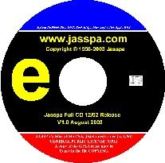
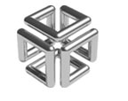

|
| Home | Overview | What's New | Support | Download | About |
May 2005 Release - Download
overview
history
May 2005
spelling dictionaries
contributions
Last Upload: 30th May 2005
As of January 2002 Jasspa's MicroEmacs is distributed under the GNU General Public License (GPL).
A selection of quick downloads for the most popular platforms.
|  | CD-R ISO images | A ISO CDROM image for all platforms. |
| Microsoft Windows | 3.11/'95/'98/NT/2K/XP | |
| Sun Microsystems | Solaris 2.6/2.8/2.9 Sparc and x86 | |
| RedHat Linux (2.4 Kernel) | Source and binary RPM for Linux 2.4 Kernels. | |
| Fedora Linux (2.6 Kernel) | Source and binary RPM for Linux 2.6 Kernels. | |
| Debian Linux (i386) | Binary Debian package (i386). | |
| Generic Linux | Linux Kernels 2.2, 2.4 and 2.6 | |
| Hewlett Packard | HP-UX PA-RISC 10.20/11.00 | |
|  | Silicon Graphics | IRIX 6.x |
| MS-DOS | DJGPP V1.0 and V2.0 versions with large memory support. | |
|
|
IBM | AIX 4.x/5.x |
|
|
Cygwin | Console and X-Window versions. |
|
|
Apple | Mac OS-X v10.3.x (Darwin 7.8.x) - Console and X-Windows. |
| OpenBSD | OpenBSD 3.4 (i386) - build from source for other versions. | |
 |
FreeBSD | FreeBSD 5.2 (i386) - build from source for other versions. |
| www.pdaxrom.org | Sharp Zaurus and other PDAs. | |
| www.hardline.org |
www.hardline.org provides pre-built packages (RPM and Debian) for Linux on various architectures. Source and binary packages are provided. |
Source download for building on your own platform.
| Build from source A source distribution to build MicroEmacs | |
| Miscellaneous files e.g. icons, Gnome files etc. | |
| Documentation files. |
| jasspame.pdf | Quick Start Guide. | |
| COPYING | GNU GPL License | |
| build.txt | Source build instructions. | |
| change.log | List of changes. | |
| faq.txt | Frequently asked questions. | |
| patch.txt | How to patch JASSPA MicroEmacs from previous install. | |
| readme.txt | JASSPA MicroEmacs installation notes. | |
| Reference card | JASSPA MicroEmacs Quick Reference Card. |
MD5 checksum files for downloads. Use md5sum -c jasspa-md5sum.txt.
| jasspa-md5sum.txt MD5 checksums for main download files. | |
| jasspa-md5sum-fedora.txt MD5 checksums for fedora RPM download files. |
This program is licensed free of charge, there is no warranty for the program, to the extent permitted by applicable law. Except when otherwise stated in writing the copyright holders and/or other parties provide the program "as is" without warranty of any kind, either expressed or implied, including, but not limited to, the implied warranties of merchantability and fitness for a particular purpose. The entire risk as to the quality and performance of the program is with you. Should the program prove defective, you assume the cost of all necessary servicing, repair or correction.
In no event unless required by applicable law or agreed to in writing will any copyright holder, or any other party who may modify and/or redistribute the program as permitted above, be liable to you for damages, including any general, special, incidental or consequential damages arising out of the use or inability to use the program (including but not limited to loss of data or data being rendered inaccurate or losses sustained by you or third parties or a failure of the program to operate with any other programs), even if such holder or other party has been advised of the possibility of such damages.
By downloading any material from this site you agree to these conditions.
Copyright © 2000-2005 Jasspa